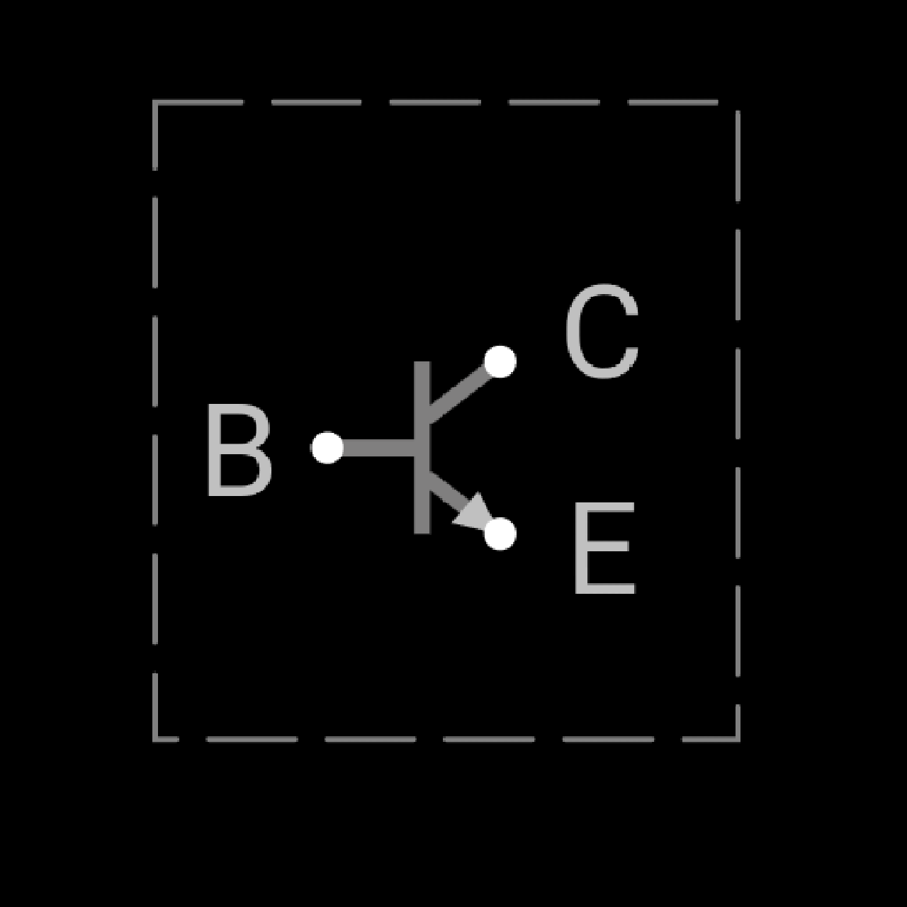
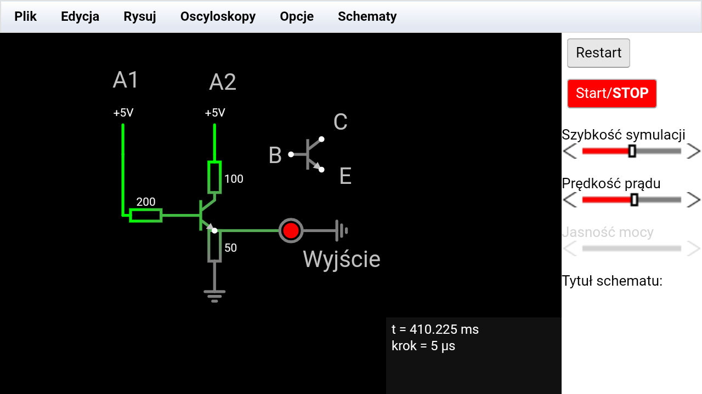

Podstawy Elektroniki
cz 1
Jak działać w symulatorze
Czym jest symulator
1. Symulator to program pomagający elektronikom zaplanować obwód i przetestować jego działanie.
2. Ma on wiele zdolności - od robienia w nim prostych obwodów po procesory.
3. Symulatory są miejscem, gdzie elektronik może sprawdzić, czy jego obwód działa oraz jak działa, zanim podejmie się zrobienia układu elektronicznego.
Naszym symulatorem jest strona Circuit Js.
1. Mimo że występuje jako aplikacja desktopowa, będziemy go używać w przeglądarkowej wersji.
2. Program jest otwarto źródłowy na GitHubie, więc można zobaczyć, jak został zaprogramowany.
3. Strona jest responsywna, co oznacza, że działa i dostosowuje się do różnych urządzeń, np. komputery, telefony.
Zaczynamy
1. Wpisz w Google "Circuit Js".
2. Kliknij pierwszy link do strony.
3. Kliknij "Schematy", pusty.
Zadanie pierwsze: dioda LED!
Postępuj zgodnie z instrukcjami.
1. Kliknij "Rysuj", tam znajdziesz wszystkie
elementy elektroniczne,
znajdują sie one w tych zakładkach
2.jeżeli jakiegoś elementu nie znasz to
kliknij zakładkę pomoc ( na mojej stronie
prawy górny róg )
Zmiana wartości elementu
1.
w circuit js możesz zmienić wartość elementów
poprzez podwójne kliknięcie ikony elementu
Twój układ powinien wyglądać tak jak w prawym górnym rogu:
.png)
.png)
Wprowadzenie
zakładka Edytuj
1.
zakładka edytuj to zakładka w której możesz edytować szybciej i bardziej sprawnie swój obwód.
np możesz kliknąć cofnij aby cofnąć jeżeli coś ci sie nie udało
PRO TIP kliknij restart aby uruchomić obwód ponownie
Sterowanie Na Komputerze: 1.
używaj scrolla i myszki do poruszania sie po mapie bez klikania przycisków na myszy
Sterowanie Mobilne: 1.
w circuit js sterowanie po mapie jest zalezne od architektury sprzętu
jeżeli masz telefon to kliknij Rysuj I przycisk na dole ' Zaznacz '
wtedy możesz przy użyciu 2 palców możesz oddalać i przybliżyć widoczność mapy oraz przesuwając je razem poruszać się po mapie
Opcja Zaznacz w zakładce rysuj: 1.
funkcja 'zaznacz' w 'Rysuj' służy do edycji położenia punktów przy pojedynczym kliknieciu na objekt który po kliknięciu podswietli się na niebiesko nastepujaco kolejne klikniecie na jeden z (kwadrtowych punktów) punkt powinien sie powiększyć i przytrzymanie przy następnym dotknieciu od punktu do danego miejsca służy do edytowania pozycji tego punktu
jezeli zaznaczysz element to po kliknięciu edycja możesz kliknąć wytnij aby usunąć objekt
przytrzymaj w losowym punkcie na mapie i zaznacz wszystkie elementy
aby można bylo edytować je wszystkie na raz
-> Warto wspomnieć że to był głównie wstęp do obsługi circuit js!
A teraz zajmiemy się kondensatorami i tranzystorami npn
Kondensatory to elementy elektroniczne, które składają się z dwóch płytek przewodnikowych odzielonych izolatorem.
Mają zdolność do pobierania ładunku i w razie potrzeby rozładowania ładunku.
Wygląda to mniej więcej tak: jeżeli podłączysz diodę LED bezpośrednio pod kondensator z baterią, to dioda się zapali i potem zgaśnie w zależności od pojemności.
Ale jeżeli naładujesz kondensator i podłączysz go pod LED, to dioda wykona to samo bo ładunek elektryczny jest zgromadzony pomiędzy przewodnikami a izolatorem
Tranzystor NPN
tworzy 3 warstwy półprzewodnikowe
negatywną pozytywna negatywną
Gdy na warstwę bazową "B" (p) tranzystora wprowadza się napięcie,
umożliwia to przepływ większego napięcia między warstwą kolektora "C" (n) a
emiterem "E" (n) jeżeli przez Kolektor "C" (n) przechodzi napięcie .
Ten proces sterowania prądem nazywany jest wzmacnianiem
tranzystorowym. NPN oznacza,
że prąd płynie od emitera (n) "E" do
kolektora (n) "C" przez warstwę bazową (p) "B".

Tranzystor NPN:
Oto przykład bramki logicznej AND.
Tak działa ta bramka:
| A1 |
A2 |
Wyjście |
| 0 |
0 |
0 |
| 0 |
1 |
0 |
| 1 |
0 |
0 |
| 1 |
1 |
1 |
Bramka AND

Tranzystor NPN:
Oto przykład bramki logicznej NOT.
Tak działa ta bramka:
Bramka NOT
.png)
.png)
Przedstawiam 2 kolejne najważniejsze układy logiczne
1. czasomierz . opis:
prosty układ czas do wyzerowania napięcia to jest wzór
T=R*C
rezystancja * pojemność kondensatora
spowoduje przygasanie diody led
2. połączenie czasomierza z bramką NOT
spowoduje zapalenie diody led po jakimś czasie
ponieważ gdy czasomierz osiagnie 63.2%
swojej wartości bliskiej 0v
wtedy bramka not która działa
tak że jeżeli ma napięcie
to wyjście=0 a jeżeli nie ma napięcia wyjście=1
.png)
.png)
Wiecej informacji jak zrobić ten schemat możesz
znaleźć na następnym slajdzie
Zadania dla was:
1. Użyj napięcia 5V, spróbuj znaleźć rezystor, który spowoduje, że z napięcia 5V zmieni się na 2V.
2. Zrób, aby dioda zapaliła się po kilku sekundach od startu. Następująco: druga dioda zapali się za tą pierwszą, ale zgaśnie po kilku sekundach.